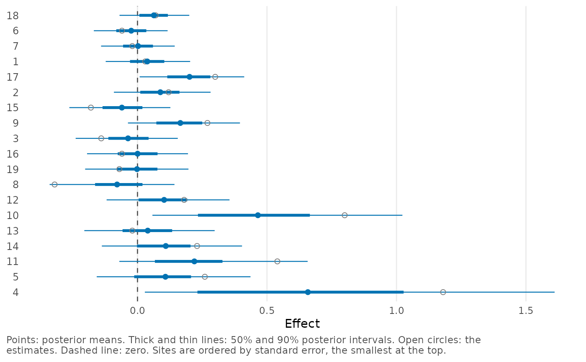
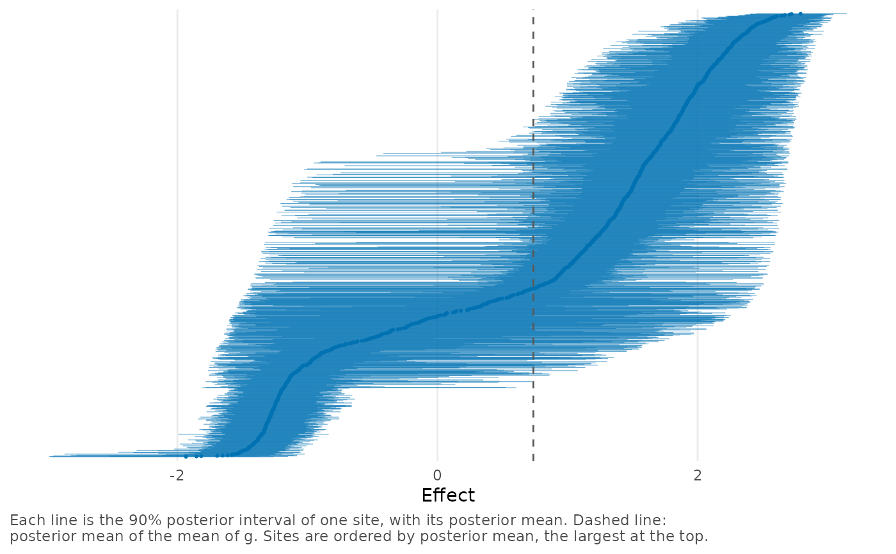

plot_sites() makes a caterpillar plot, or forest plot, of the site
effects. Each row is a labeled site with the posterior mean of its
effect, an outer and an inner posterior interval, and its estimate.
When there are many sites, the plot can be limited to selected sites or
to the sites with the lowest and the highest posterior means.
Arguments
- x
A
bef_fitobject created bybayes_efron_fit().- sites
Sites to plot, specified as a numeric vector of positions in the data or a character vector of site labels. If
NULL(the default), all sites are plotted.- n_extreme
An optional integer. If specified, only the
n_extremesites with the lowest and then_extremesites with the highest posterior means are plotted, in two panels. Cannot be used together withsites.- sort_by
Variable by which the sites are ordered:
"mean"(the default) for the posterior mean,"sigma"for the standard error,"observed"for the estimate, or"prob"for the probability that the effect is positive."none"keeps the order of the data.- level
Posterior probability of the outer interval, a number between 0 and 1.
- inner_level
Posterior probability of the inner interval, a number between 0 and
level. The inner interval is shown as a thicker line. UseNULLto omit it.- highlight
Sites to show in a different color, specified in the same way as
sites. IfNULL(the default), no site is highlighted.- show_observed
If
TRUE(the default), the estimates are shown as open circles.- ref
Where to place the dashed reference line: at the posterior mean of the mean of \(g\) (
"mean_g", the default) or at zero ("zero"). Use"none"for no line.- truth
An optional numeric vector with the true effect of every site, for simulated data. The true effects are shown as crosses.
- max_sites
Maximum number of sites that are plotted with labels. See Details for how a larger number of sites is shown.
- scale
Positive number by which the effects are multiplied in the plot, e.g.,
scale = 100to show differences in proportions as percentage points.- ...
These dots are for future extensions and must be empty.
Details
The point in each row is the posterior mean, the thick line is the
inner interval and the thin line is the outer interval. The open circle
is the estimate, so its distance from the point is the shrinkage of the
site, i.e., how far the model moves the estimate (plot_shrinkage()
shows this for all sites together). The dashed line is the reference
line selected with ref.
The plot shows the values returned by site_summary(), so its intervals
are the intervals of confint.bef_fit_re() at the same level.
If more than max_sites sites are to be plotted, they are shown as
thin lines without labels, inner intervals or estimates, and a message
explains how to select fewer sites.
Examples
# The 10 firms with the smallest and the 10 with the largest gaps, in
# percentage points.
plot_sites(krw_fit, n_extreme = 10, scale = 100)
 # All 19 studies, ordered by standard error.
plot_sites(raudenbush_fit, sort_by = "sigma", ref = "zero")
# All 19 studies, ordered by standard error.
plot_sites(raudenbush_fit, sort_by = "sigma", ref = "zero")

# 1,500 sites: lines without labels.
plot_sites(twin_towers_fit)
#> There are 1500 sites to draw, more than `max_sites` (100), so they are drawn without labels. Choose fewer with `sites` or `n_extreme`, or raise `max_sites`.
